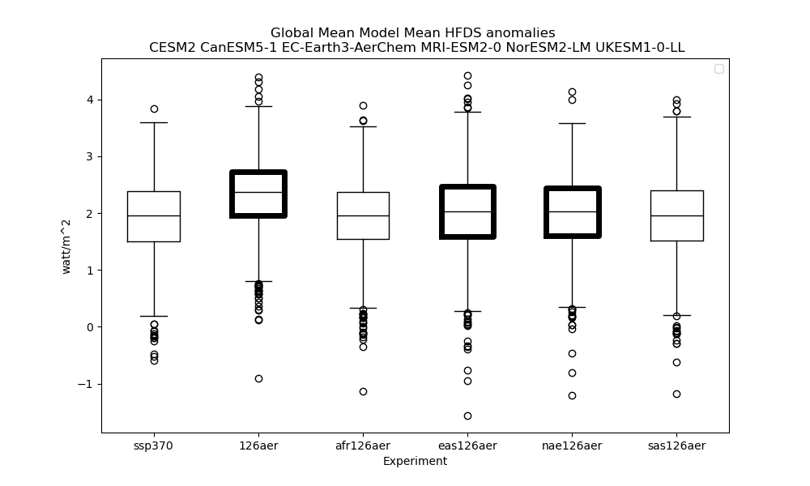

RAMIP UKESM1-0-LL global mean HFDS 2035:2050 - think outline where experient significantly different from ssp370
/gws/ssde/j25b/ramip/users/dlrhodso/analysis/HFDS/plots/global_mean_hfds_anom_all_ALL_CESM2_CanESM5-1_EC-Earth3-AerChem_MRI-ESM2-0_NorESM2-LM_UKESM1-0-LL_2030_2050.png